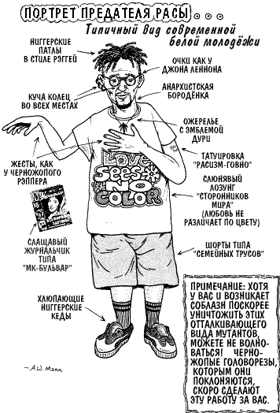

Warrax
Дополнения к "Русской крови"
|
Я считаю антропологию псевдонаукой. Если верить её определению человека, мир перенаселен. Станислав Ежи Лец |
Изначально статья писалась для газеты, что подразумевает формат изложения, отличный от того, что я могу написать у себя на сайте. Как ни странно (если не понимать причин), именно эта моя статья вызвала наибольшее количество реплик вида "да как же так можно!". Закономерность наблюдается интересная — у многих, называющих себя сатанистами, моя деятельность в области национализма вызвала аналогичное отношение. Казалось бы, ничего общего? Нет — общее как раз есть. Можно объявлять себя сатанистом и при этом ограничиваться безопасной говорильней. ЧСВ тешит, неудобств не приносит. А вот реальная деятельность в социуме — это уже опаснее. И сразу возникает опасение — а что, если меня-любимого вызовут в Кровавую Гэбню™ и скажут, что раз все сатанисты — это нацисты.. Впрочем, есть ещё один вид неодобрения, но психопатологию вида "Тру-сатанист должен ненавидеть все и вся в этом мире и выступать исключительно против" (при этом реальные действия опять же не производятся) я здесь рассматривать не буду. Ровно та же причина видна и в протестах против вопроса крови в национализме: если ратовать за "русский национализм для всех наций", т.е. записывать в русские любого желающего, то при этом можно громко высказываться, публиковаться, изображать деятельность и даже что-то на этом зарабатывать. В связи с ростом национального самосознания у русского народа карту национализма уже пытаются использовать многие политические группы (вспомните хотя бы приснопамятный ролик "Родины"), и можно смело прогнозировать увеличение количества национально-русской риторики. НО! При этом национализм русских будут выхолащивать: то, что действительно является русским национализмом — поддерживать власть предержащим попросту самоубийственно. Поэтому политологи стремятся "вывести пар в свисток" — сохранив внешние лозунги национализма, преобразовать идею в отличную от национальной.
Процитирую Яроврата (сокращенно, выкинуты переходы на личности и неудачные на мой взгляд аллюзии а ля Истархов):
Кособокие постмодернистские фантомы и симулякры не являются хаотичными — в структуре кремлевских "обманок" есть определенная иерархия. Условно я бы выделил четыре основных уровня.
Первый уровень — это чистый интернационализм и космополитизм. На него сегодня никто не купится.
Второй уровень — это империя: "советскость", "евразийство", "византизм", "либеральная империя" и т.п. Тоже, в общем, отработанный материал. "Новая историческая общность" больше не катит.
Третий уровень — "российский национализм". Он активно оперирует словом "нация", но на деле эта "российская нация" — та же самая "новая историческая общность — советский народ". Этот подход сейчас применяет Кремль, т.к. предыдущие уровни "обманок" уже не срабатывают.
Четвертый уровень — "русский национализм", определяющий "русскость" по государственно-культурному принципу. На деле — тот же "российский национализм", только вместо слов "российская нация" применяются слова "русская нация". За красивыми словами скрывается та же "новая историческая общность". Кремль пока ещё на этот уровень не перешел, держится на "российском национализме", но рано или поздно перейдет и на этот уровень.
Это — четыре уровня антирусской обороны.
Рано или поздно они будут "взломаны", но Кремль может замедлить этот процесс, используя разнообразные приманки. Таких приманок тоже четыре.
Первая приманка — госпатриотизм. Объявляется, что русский — это тот, кто служит правительству Российской Федерации. Самая простая и древняя приманка. Лозунги вроде "Слава России!" или "Россия — все, остальное — ничто!" до сих пор воспринимаются как "жуткий радикализм". Соответственно, разнообразные национал-революционеры (не говоря уже о тех русских, кто живет за рубежом и гражданства РФ не имеет) — вне "нации".
Вторая приманка — это культурно-языковой фактор. Применяется там, где госпатриотизм не работает — например, в странах Прибалтики. В этом случае вместо термина "русскоязычные" власть употребляет слово "русские", но имеет ввиду всё-таки русскоязычных (в этом случае в "русские" записываются даже еврейские "русскоязычные" комиссары, коих в Прибалтике, ясен пень, не любят).
Третья приманка — религия. Объявляется, что русский — это тот, кто православный. Причем не просто православный, а именно прихожанин РПЦ МП (т.е. сергианец-ридигерец). Врагами объявляются представители враждебных конфессий — язычники (в первую очередь русские), мусульмане и, в особо радикальном варианте, иудеи. Для самих иудеев это не проблема — они давно уже все крещёные, и весьма неплохо совмещают кипу и крестик. Более того — из иудеев выходят самые радикальные "поборники православия". Эта приманка опасна тем, что переводит конфликт с еврейством в конфликт с иудаизмом (хотя далеко не все евреи исповедуют иудаизм), а конфликт с черными — в конфликт с мусульманством (хотя далеко не все чёрные исповедуют ислам). То есть пар опять уходит в свисток. Как побочный эффект — национал-социализм легко можно заклеймить "языческой ересью".
Наконец, четвёртая приманка — это коммунизм, а точнее — советизм. Здесь, разумеется, имеется ввиду не марксизм-ленинизм, а т.н. "советский империализм", то есть спекуляция на ностальгии по советским временам. Тут и заигрывание со сталинистами, и муссирование Великой Отечественной (а это — ещё одно оружие Кремля против национал-социализма). (а вот это неплохо совмещается с русским социалистом, но если не подменять понятия)
Весь этот комплекс средств "защиты и нападения", при всей своей неоднородности, очень легко выявляется по простому признаку: игнорированию расового вопроса.
Игнорирование вопроса крови
Первым стандартнейшим приемом является смена тезиса вопроса "о нациях" на вопрос "об отдельных представителях". Работает либо на альтернативно одаренных, которые за деревьями леса не видят, либо на гуманистах, которым жалко, если кто вдруг невинно пострадает. Отмечу, что такой подход вредоносен для нации — можно провести аналогию: пытаться спасти отдельных солдат на войне (включая и у противника), игнорируя факт неизбежности потерь в сражении, и как следствие — проиграть битву. Подход либо наивного интеллигента-гуманиста, либо осознанного провокатора.
Вторым приемом является полное игнорирование генетической составляющей и сведение национализма только к культуре/языку/этике. Получается интересно — выходит, такие деятели ратуют за "русским может стать любой". Этот тезис я разбирал в комментариях к Мендковичу. Такой подход выражает или непонимание того, что такое нация, или осознанные действия, направленные на уничтожение русского этноса метисацией со другими.
Третий прием — попытка показать ненаучность расологии. Тот же Мендкович честно писал: "главная цель моей статьи — лишить статью Борцова "научного" обрамления". Поскольку отрицать факт различия антропологических параметров между нациями невозможно, предпринимается попытка протащить как серьезный аргумент детскую подначку "а куча — это сколько?". Мол, раз были межнациональные браки — то строго 100% русской крови нет, а раз нет — то и говорить не о чем. Этот прием применяется, что характерно, именно к русским, и только к ним. В существовании этнических евреев или там грузин никто почему-то не сомневается. Чуть более развитые апологеты абсолюта соглашаются с тем, что требовать строго 100% — это странно, и выдергивают из рукава вторую крапленую карту: ладно, путь не сто процентов, а сколько конкретно? Назовите число и обоснуйте, почему процент генов, на "дельта малую" меньший, будет уже считаться не русским? — тот же "парадокс кучи". Забавно, что, протестуя против важности крови для нации, эта аргументация базируется на возведении таковой в абсолют.
Однако национальность не сводится как "только к крови", так и "только к культуре". По отдельности эти вопросы разбирались, и не раз, но придется все же объяснить их комплексно.
В глубокой древности понятия "кровь и почва" были естественным, изначальным различием между племенами. Уже потом появились разные языки и виды культуры, изначально опять же четко коррелировавшие с родственными связями и территорией проживания. О каком-либо разделении культуры и крови/почвы можно говорить лишь с момента, когда стала возможно массовая смена места жительства на другую страну. При самом попустительском подходе — это никак не ранее XIX века. При этом, обратите внимание, речь идет НЕ об отрыве культуры/языка/этики от крови/почвы, а лишь о том, что есть некоторое количество индивидов, которые оторваны от почвы, но являются носителями культуры/языка/этики, и количество это достаточно, чтобы имело смысл о нем говорить как о социальной группе. Продолжает развиваться как культура, так и язык именно в месте массового проживания носителей "крови и почвы", а отнюдь не в эмиграции и т.п.
Важно: коллективное бессознательное формируется очень долго; за периоды времени, которые принято называть историческими. Многовековое формирование национального характера не может быть гармонично изменено за период, относящийся к новейшей истории. За столь короткое время возможно лишь разрушение национального самосознания — формирования т.н. общечеловека, социальной единицы общества потребления.
Нет никакого "сидения между стульями". Процитирую Массела:
Теперь — несколько слов о противопоставлении "Крови" и "Духа", т.е. о том, что важнее при определении национальной принадлежности. Сейчас я скажу то, чего мои старые соратники вряд ли от меня ожидают: да, для меня, автора "Развития расовой антропологии", и на бытовом, и на научном уровнях Дух играет большую роль, чем Кровь, НО при этом я утверждаю, что человек, расово не подходящий под критерии "русскости", никогда не будет русским по Духу — чисто по законам биологии, ведь так или иначе, а качества "из ниоткуда" не возникают, они привязаны к физиологии, и если изменяется физиология — изменяются качества. Цвет кожи — это не "критерий" для расолога, это именно внешнее проявление физиологии данного организма. Грубо говоря, сколько я ни встречал русско—молдаванских (например) полукровок, это ВСЕГДА были мечтательные, доверчивые, дружелюбные и легко утрачивающие самоконтроль люди с характерными чертами лица и задумчивыми карими глазами. В то же время русско—бурятские полукровки при схожей, но все—таки специфической физиогномике, склонны к "невинным" обманам и редко могут определиться с тем, чего же они хотят в данный момент.Таким образом мой взгляд на расовый аспект русского национализма можно назвать своего рода "расовым манихейством". Да, в древности наши предки были чистокровными белыми, наделенными всей суммой качеств, характерных для белой расы, в максимальной степени. Но в ходе истории эта чистота была значительно утрачена благодаря расовому смешению, и сейчас вполне возможно, что чистокровный (на взгляд профана) "ариец" проявит отрицательные для русской системы ценностей качества, а какой—нибудь полукровка будет настолько тяготеть к "русскости" (и в конечном счете — к "арийскости", к классическим античным идеалам), что духовно будет полностью соответствовать критериям этой "русскости". Часто ли так происходит? Не слишком. Но и не так редко, чтобы закрыть на это глаза со спокойной совестью. Однако при всем при этом наш идеал, идеал русских националистов — возрождение на новом цивилизационном уровне общества, построенного на русской системе ценностей, а значит — и возвращение к исконной чистоте расы, с которой неразрывно связан дух.
Для нации важно всё — кровь, почва, язык, культура, этика и много чего ещё. Расовое сознание — это система, каждый элемент которой не может быть элиминирован без разрушения таковой. Давайте ради интереса прикинем, что будет, если признать какой-либо элемент незначащим.
Кровь. Проще говоря, генотип. Разумеется, глупо определять некий "пограничный процент", но чем меньше инородных генов — тем лучше. И дело не в том, что "такая—то внешность лучше всех других", а именно в соответствии определенного фенотипа с генотипом нации. Как подтвердит любой генетик, гены работают не по принципу "один ген — одно определенное качество", а группами, при этом ученые знают о ДНК и пр. ещё далеко не все.. Евгеника — это вовсе не попытка создать "сверхчеловека" из генетического мусора, это в первую очередь помощь естественному отбору; гуманизм же способствует деградации человека как биологического вида (даже без учета рас/наций). Смешение генотипов разных наций — это смешение того, что было приспособлено для разных условий. На выходе же получаем неизвестно что. простейший пример: у какого-то там племени часто встречается серповидная анемия — весьма неприятная штука. Но при этом этот же ген дает иммунитет к заболеванию — если склероз не подводит — малярией, распространенному в тех местах. Спрашивается, а зачем получать по наследству риск серьезной врожденной болезни, если преимущество, получаемое при этом, на фиг не сдалось? Это лишь один пример; но, с учетом незнания всей генной структуры "что за что отвечает" — сколько таких "подводных камней" всплывает на поверхность при метисации? Ну и последнее. Можно сказать, эстетическое. Русские люди бывают разные — я и сам не похож на высокого стройного голубоглазого блондина, хотя вплоть до прадеда (дальше не знаю) в предках были лишь казаки Хоперского округа (при этом и отец, и дед были выше и крупнее меня — мельчаем...) по отцовской линии, а материнская — из Тамбовщины. Но, не зацикливаясь на брюнетах и блондинках, все же никто не оспорит того, что русским не свойственны тот же эпикантус или негритянские волосы вида "комок пружинок". Спрашивается, зачем отстаивать тезисы, из которых следует, что русские (утрируя) могут стать нацией монголоидных негров? Это НЕ национализм. Все просто: эстетический фактор обоснован именно бессознательными мотивациями, и если кто настолько мультикультурен, что ему все равно, как выглядят окружающие — то он, может быть, и замечательный специалист и т.д. и т.п., но при этом неизбежно имеет проблемы с психикой, т.к. этологию с её различением "свой/чужой" никто не отменял, и в любом случае — НЕ относится к нации кроме как формально по генам.
Почва. Думаю, что всем понятно, что имеется в виду место проживания, а не почвенный покров. Уточню: место проживания исключительно значимо потому, что это — место компактного проживания значительного количества носителей национального сознания, что дает возможность новому члену общества воспринимать это с первых дней жизни. Средовым фактором обусловлена значительная часть наполнения структуры психики, и особенно важны в этом плане первые пять лет жизни, когда маленький человек подходит к освоению мира ещё не логически-осознанно, а непосредственно. Отрыв от почвы неизбежно приводит к смешению характеров: дети эмигрантов уже не являются носителями национальной культуры, а имеют значительное влияние культуры страны проживания. К чему проводит массовый отрыв от почвы, хорошо описал Юнг на примере американцев в работе "Проблема души нашего времени", цитату см. здесь. Обобщенно: отрыв от почвы автоматом означает отрыв от национальной среды, что неизбежно вызывает деградацию в мультикультурных общечеловеков. Единственно возможный способ сохранения национальной идентичности был апробирован евреями: жесткая национальная идентификация, в том числе — и по религиозным заповедям (это не обозначает обязательной религиозности), акцентированное отделение своей культуры/общности от окружающих, превращение в народ-паразита (как ни крути, живут чужими ресурсами, что относится и к Израилю).
Это — не русский путь. Возражения есть?
Язык. С тем, что язык и мышление очень тесно связаны между собой, надеюсь, никто спорить не будет. Наглядным примером является наличие в языках разных народов понятий, которые не могут быть адекватно переведены на другие языки. Разница бывает в совсем уж неожиданных вещах: понятно, что у северных народов будет несколько десятков наименований снега — это понятно, но вот в английском языке нет слово "синий". Вообще. Только blue — и синий, и голубой. Язык, что понятно, начинает усваиваться бессознательно — ещё в младенческом возрасте, в зависимости от того, на каком языке говорят родители. И вообще — вы себе представляете русских без русского языка?
Культура. Аналогично языку. Мне, честно говоря, уже надоела эта тема — обсуждали долго и нудно ещё в ФИДО — в ru.unhuman, искать по слову "рэп". В конце этой статьи скажу пару слов о мультикультурности в общем виде, включая эту тему. См. на картинку справа — она хоть и изначально американская, но сугубо по делу. Во вы — вы лично! — можете назвать растамана русским человеком? Конечно, русская культура отнюдь не сводится к балалайкам и гармошкам — это эрзац, который пытаеются внедрить как "официально одобренный". Будет ли кто спорить, что народ без собственной культуры не является нацией, и уж тем более — с чужой культурой? Думаю, что нет.
Этика. Можно включать этику в часть культуры, можно подойти как к философской категории. Я лично понимаю в обсуждаемом контексте этику согласно системе Крылова, изложенной в работе "Поведение". Конкретно русским соответствует четвертая этика:
"Не позволяй — ни себе, ни другим (по отношению к себе) делать то, что ненавидишь в себе и в других. Данная этическая система пока не реализована в виде законченной системы, ставшей основой блока цивилизаций (наподобие трёх предыдущих), хотя это вполне возможно (соответствующий цивилизационный блок можно было бы назвать "Севером")."
Здесь налицо корреляция с понятием "нордической расы" — это будет раскрыто в дальнейших работах этой серии.
Таким образом, в использованном ранее определении нации, данным И.В. Сталиным, часть "Нация есть исторически сложившаяся устойчивая общность людей" автоматически обозначает родство по крови — в противном случае нет смысла говорить об историчности (содержание самой статьи — другой вопрос, я согласен именно с определением).
Из системы нации нельзя выкинуть ни кровь/почву, ни культуру/этику — в современном мире возможно одно без другого, но при этом индивид НЕ принадлежит нации как системе, ограничиваясь соответствиями по отдельным параметрам. Для национализма же важен именно системный подход. Не имеет значения, с какой стороны пытаюется "прорыть подкоп" — к "крови" ли, к "культуре" — все подобные действия направлены на разрушение национального самосознания.
Теперь давайте поговорим о возможных "степенях соответствия". Об этом упоминалось в приложении к статье, но озвучу ещё раз. Возможны лишь четыре комбинации из двух дихотомий:
- Русский по крови и русский по духу;
- Русский по крови и нерусский по духу;
- Нерусский по крови и русский по духу;
- Нерусский по крови и нерусский по духу.
Пп. 1 и 4 — понятны. Давайте внимательно посмотрим на 2 и 3. Для начала отмечу стандартное заблуждение "все, кто генетически русский, русский и есть. Общечеловеки к нации относятся постольку-поскольку. Именно на этом основана поверхностная критика национализма "неужели вы хотите нацию из русских — ленивых алкашей?". Разумеется, на общечеловеков также влияет национальное происхождение, и для любой нации они имеют свои особенности (скажем, русских и ирландцев никто перепить не может), но тем не менее обыватели относятся к нации только по происхождению, не обладая её духом. Таким образом, один из вариантов "русский по крови и нерусский по духу" — это именно "быдло обыкновенное, с русскими генами". Пользы от такого мало, но гены всё же на месте, и родиться от их носителя может вполне нормальный русич, особенно если государство будет националистическим и будет заботиться о подрастающем поколении как положено. Кстати, это один из контраргументов на тезис "а какая разница, какое быдло вокруг". Стоит заметить, что "обыватель" — это все же не бинарное понятие, и при определенных условиях просыпается, образно говоря, генетическая память — и самый обычный работяга вдруг становится вровень со своими предками-воинами (вспомним массовый героизм Великой Отечественной). Иногда нужен и меньший повод — буквально на днях увидел ссылку в ЖЖ о том, что "раньше о национализме и не задумывалась, но вот родила — и стало понятно, зачем и почему". Таким образом, хотя обыватель практически не обладает национальным самосознанием, его нельзя игнорировать. Именно он составляет те самые народные массы, без — хотя бы пассивной — поддержки переход Руси к национал-социализму невозможен.
Значительно менее распространен вариант "русский по происхождению, но осознанно на антирусской позиции". Тут, думаю, все понятно, хотя надо упомянуть разделение на "идейно антирусски настроенных" и "гуманистов-либерастов-идеалистов", которые могут поддерживать антирусскую политику из наивности. Впрочем, разница на практике не велика.
"Нерусский по крови и русский по духу" — пожалуй, самый запутанный пункт. Здесь к вопросу нельзя подходить без учета расологии (впрочем, как и к любому серьезному социологическому вопросу).
В большинстве случаев это лишь стремление "записаться в русские", поскольку чем-либо выгодно. Но это — банально. Интереснее присмотреться внимательно к вопросу искреннего стремления отнести себя к русским. Во-первых, здесь важна четкая позиция "да, у меня есть нерусские предки, но они не имеют значения; я полностью ощущаю себя русским человеком; я во всем и полностью — за русских, вплоть до смерти за русское дело". В этом варианте мы имеем тот самый редкий вариант "русский человек нерусского происхождения". Следует отметить особенности в отличие от этнически русского. Главное: такая позиция — всегда осознана. Она не может быть "ну, раз уж я таким родился..." — именно поэтому, если имярек русский НЕ вплоть до готовности отдать жизнь во имя русской нации, то он лишь притворяется. Да, на это способен только осознанно русский, но этническим-по-умолчанию русским инородец являться попросту не может. Поэтому и требования выше: он может быть лишь осознанно-русским, а не просто-русским-по-рождению. Из этой же посылки следует другая особенность, ставящая планку не ниже: в общем случае нерусский, искренне считающий себя русским, не должен рожать детей. Все просто: нельзя засорять генофонд. Собственно говоря, то же самое относится хоть к 100% русским, имеющим какие-либо заболевания, однозначно передаваемые по наследству (а в условиях, когда ещё не решена проблема с эвтаназией новорожденных и микропедиатрической диагностикой — и когда не однозначно, но достаточно вероятно). Националист берет на себя ответственность за благополучие нации — и плодить как метисов, так и заведомо больных он не будет.
Однако вопрос не так уж и прост — нации весьма отличны по характеристикам близости к русскому этносу. Моя точка зрения такова: русский — это индивид белой расы с русским менталитетом. Таким образом, если счесть средовой фактор априорно благоприятным, получим, что можно без каких-либо проблем заводить ребенка с представителем белой расы другой национальности. Скажем, ребенок, родившийся от русского и немки (шотландки, болгарки, норвежки и т.д.) и воспитанный в русской среде, будет однозначно русским.
Другая противоположность — чёрная раса. Не настаиваю на абсолютизации своего мнения, но лично я придерживаюсь точки зрения строгой недопустимости гибридизации с неграми. Основания: четкое отставание IQ черных от других рас + наибольшие отличия об белой расы по внешности. Негроидные черты лица смотрятся у белого именно как уродство — причем дело отнюдь не в цвете кожи: так, многие индийцы ничуть не светлее негров и при этом вполне европеидны по внешности. Недаром есть понятие "индо-европейской" расы, пусть и не строго научное.
Сложнее обстоит дело с желтой расой. Во-первых, она гораздо привычнее для русских — мы долго являемся соседями, и эстетический фактор здесь работает скорее как "интересная экзотика", чем как "уродство". Во-вторых, желтая раса весьма разнообразна — сравните сами типичных корейцев и лаосцев или вьетнамцев. Опять же, не претендуя на единственноверность, выскажу свою точку зрения: браки русских с представителями желтой расы допустимы, но не более того. То есть — если кому приспичит, то ладно; но при этом отношение общества должно быть именно как к экзотике, не становиться обыденностью. Брачные отношения с такими представителями желтой расы, которые фенотипически удалены от белых, как те же вьетнамцы — практически недопустимы.
При всем этом важен гендерный фактор: поскольку сложившаяся модель семьи у русских патриархальна, то рассматриваемая выше возможность межнациональных браков рассматривается со стороны "русский женится на нерусской и забирает её в русскую семью". Отмечу, что при повышении национального самосознания такое будет возможно лишь в случае "не-совсем-русская по внешности и русская по менталитету". Как-то я сомневаюсь в готовности русского человека жениться на явно нерусской по менталитету девушке. Обратный вариант "русская девушка выходит замуж за иноплеменника" должен быть редчайшим из исключений. Важно отметить, что подобные правила практически бесполезно вносить законодательно: их необходимо внедрять на уровне общей культуры, как естественные для русских.
Примеры, "как надо":
Пишет Beloslav (der_schlangen)
@ 2005—11—24 10:43:00Смотрел вчера дебилизор...
Уже засыпаю значит. ну а там идет передача о ранних детях ранних браках и абортах.
И ситуация там описывается — город, кажется Тольятти, девочка лет 14 залетела от дагестанца. жениться на ней он естессно не хочет "Я мусульманин. У меня старший брат ещё не женился". Живет он без регистрации, без документов. И к ответственности, как я понял, его не привлекли.
То есть муслимские законы позволяют ломать жизнь по сути дела ещё детям, развращая их, но отвечать за поступки — так тут в сторонку.
Я сквозь сон выматерился и заснул дальше ничего не помню...
Правильной была реакция жены: ДУРА! а чего другого ты от нерусских ждала?
PS У меня жена из казачьей станицы и если девушка имела глупость просто пройтись по улице с нерусским, то она получала клеймо "девушки легкого поведения" и замуж в станице уже ни за кого выйти не могла.
From: olga_the_dark
2005—10—24 05:04 am...на типичных сахалинских персонажах класса "кореец по крови, русский по духу" очень многое можно показать. Ибо прекрасный пример обрусения иной народности и ассимиляции её русскими — уже в третьем поколении от Кореи у них остались только ким—ча (классная штука, кстати) и узкоглазые лица. Во всём остальном они совершенно русские. В отличие от тех же американских негров (особенно принимая во внимание, что наши корейцы во времена японской оккупации находились почти на правах тех же негров, то есть лешёвой рабочей силы) или вездесущих хачей, не вопят о политкорректности и защите прав, а порой посмеиваются над собой же (вчера была на местном КВН... там один восточной внешности паренёк сразил зал шуткой "я злых собак не боюсь, потому что кто ещё кого бояться должен — кореец собаку или собака корейца!")... точнее, в большинстве случаев даже не заостряют внимание на происхождении, на полном серьёзе считая себя русскими (ни разу не наблюдала "корейского национализма" или чего-то подобного). Смешанных браков, конечно, много здесь бывает... но тот случай, когда их и смешанными не особо-то и считают, ибо местные этнические корейцы уже как "свои". Кстати, дети от этих браков как правило, получаются довольно красивыми, с куда более благородными чертами лица, чем у "чистых" азиатов — и никакого осуждения со стороны общества, комплексов неполноценности и иже с ними. То есть ИМХО как раз тот случай удачной русификации.
Мой критерий именно такой — чтобы брак и как-то не воспринимался как "смешанный". Если есть такое ощущение — то вряд ли из такого брака что-то хорошее выйдет, как в личном плане, так и в плане национального вопроса. А негров, хачей и иже с ними — нафиг, ибо действительно "чужие" они. Мне так кажется, что здесь важен такой здоровый инстинкт под названием "настолько чуждо, что я столько не выпью, чтобы спать с ЭТИМ — прямо как с обезьяной". Вот на воспитание этого инстинкта и нужно делать основной упор в пропаганде. А законодательные запреты — вопрос отдельный...
From: ratibor_vv
2005—10—25 09:19 amПобочный аспект. Не потому ли по дебилизатору в ток-шоу, дурацком кино, в газетенках типа "спид-инфо" и др так настойчиво долдонят о копрофилии, зоофилии и т.п., чтобы незаметно снизить порог брезгливости у целевой аудитории. Если для человека будет нормой заниматься сексом с обезьянами, собаками, трупами, то уж с унтерменшами и подавно.
From: sish
2005—12—28 04:00 pmНахер людей с неимперским мышлением и нерусской национальности из управления. Я готов получить поражение в правах за своего отца нерусской нации. Хрен с правами — важно, чтобы Родина жила.
Еще несколько мыслей по поводу
Тезисно, раскрывать не буду. ИМХО и так все ясно.
Выше было написано именно об отдельных индивидах. В случае же с мигрантами, образующих диаспоры — всё куда нагляднее: они однозначно разрушают народную культуру, внедряя элементы своей и тем самым разрушая систему; любая диаспора по определению выступает против ассимиляции; диаспорное проникновение включает в себя в первую очередь либо криминально/бизнесменную "верхушку", а также низовой гастарбайтерский слой. Таким образом, подобная миграция даже без учета национальных качеств разрушает устоявшуюся систему социума.
Отдельно стоит сказать о попытке построение интернациональной общности советского народа — этот аргумент иногда выдвигается как "доказательство" неправильности националистического пути. Рекомендую статью "К вопросу о национальной политике". Кратко и по делу.
Почему "мультикультурный" человек является деградацией вида? Всё просто: гармоничная психика представляет собой систему всех "слоёв" — как сознательных, так и бессознательных. Бессознательное a priori содержит национальную составляющую. Ergo — без проработки своей национальной принадлежности продвижение к самости невозможно. Обращаю особое внимание — сказанное не обозначает принятия своей национальности по рождению со всеми её особенностями; но при этом проработка отрицательных черт таковой невозможна без осознания национальности как таковой. Впрочем, я об этом уже писал.
Национализм не обозначает "измерения черепов" и т.п. Тем не менее может быть такая ситуация, что вполне адекватный индивид будет иметь некоторое поражение в правах. Но вот скажите, кого из вас волнует, что вы (как минимум — большинство читателей) не входите в сборную страны по тяжелой атлетике? А ведь это обосновано тем же самым — врожденными данными. В общем виде: нерусский — не значит "плохой".
Пишет Nataly (nataly_hill)
@ 2006—01—04 23:47:00
Почему-то люди, обсуждающие вопросы "крови и почвы vs. дух и культура", в массовом порядке не понимают одну очевидную вещь.
А именно: "нерусский" не значит "плохой человек". Не значит, что он не способен ни на что хорошее, ему нельзя ни в чем верить, с ним нельзя работать, вести дела, дружить и т.д. Это вещи никак не связанные. (Т.е. встречаются такие "нерусские", к которым все это относится напрямую, но это вызвано их особыми и специфическими качествами, а не "нерусскостью" как таковой.)
"Нерусский" — это просто не русский.
Ну вот бывает такое. Бывают, скажем, мужчины, а бывают женщины. Бывают высокие и малорослые, блондины и брюнеты. Бывают с абсолютным слухом, а бывают — которым, наоборот, медведь на ухо наступил. Бывают русские и нерусские. Это нормально, в этом нет ничего дурного или унизительного. И человеку, от природы находящемуся в одной категории, нет причин рваться в другую или обижаться, что его "не принимают".
Очевидное, по-моему, обстоятельство; однако высказывания типа "А вот Виктор Цой писал такие хорошие песни — неужели же он не русский?!" — равно как и попытки "правильного националистического ответа" в стиле "Э-э... гм... да чего он там вообще хорошего мог написать, этот кореец узкоглазый!" — показывают, что очень многим это недоступно.
PS: Пример про Цоя я не сама придумала, а читала как—то в ЖЖ у beloyar.
nataly_hill
2006—01—04 11:15 pm
...я не вижу другой идеологии, способной вытащить страну и людей из ямы, в которую мы провалились.
А яма — она ведь для всех. Да, при национализме может случиться (как вероятный "перегиб", которого сами националисты постараются избежать), что некое ни в чем не виноватое меньшинство окажется "людьми второго сорта". Но сейчас у нас "людьми второго сорта" являются вообще все, кроме нескольких тысяч жуликов. И похоже, что, если резко не повернуть курс, дальше будет только хуже.
Меня первый вариант устраивает больше, так что...
nataly_hill
2006—01—05 01:46 am
Скажи, видел ли ты ЖЖ roizman?
Если и не видел, то, думаю, слышал об этом человеке. "Город без наркотиков" — это он.
Я не знаю, полностью ли он еврей или частично, но факт, что фамилия у него характерная и, наверное, это не случайная игра природы.
И, занимаясь политикой и в то же время плотно общаясь с людьми из народа, Ройзман, конечно, знает, что встречаются у нас такие товарисчи, которые судят о людях по крови и, в частности, сильно не любят "жидов". Наверное, есть и такие одаренные личности, которые полагают, что "жид" не имеет права спасать русских детей от наркотиков. Даже наверняка есть — это только скорость имеет предел, а глупость человеческая беспредельна.
Как ты думаешь, сильно его это волнует?
Как ты думаешь, если кто-нибудь в ЖЖ ему напишет: "Вот, ты, такой-сякой, кровь у тебя не та, а туда же лезешь в патриоты, нет тебе веры, мотал бы лучше в свой Израиль" и т.п. — он огорчится? Обидится? Начнет доказывать, что его собеседник неправ? Или, может быть, отвлечется от наркоманов и наркоторговцев и начнет борьбу с "русскими фашистами", которые отвечают на его заботы о русском народе черной неблагодарностью? Или начнет искать себе какой-то "особый национализм", который, с одной стороны, будет хорош и полезен, а с другой, полностью обезопасит его, вместе с его фамилией, от подобных наездов?
Мне почему-то кажется, что нет.
Я думаю, что он пожмет плечами и продолжит заниматься своим делом. Если такое ему в лицо скажут — возможно, даст в морду, но на этом инцидент будет исчерпан.
Вот и всё.
stalker707
2006—01—05 11:10 am
Самое интересное, что вопросами "чистоты крови" озадачены в первую очередь как раз общечеловеки. Практически любую тему они сводят к обсуждению вопроса "а бить по морде будете или по паспорту?"